Touchline — Tackled Player Reactions V1
branch prototype/3d-animation-pipeline · built on baseline/defending-v1.1-slide (cdb0735) · frozen controls baseline/outfield-runtime-v1, baseline/possession-v1.1-handoff, baseline/defending-v1.1-slide untouched · local only, nothing pushed
http://127.0.0.1:8124/sandbox/visual/match.html?ofPlay=1&fps=60&squad=D7Shift+7/8/9 the defending drills. Without the ball: Z jockey, Space standing tackle, F slide. Tab takes the attacker. Any challenge that meets his legs produces the reaction the contact causes. Shift+T tackled-player demo (Shift+N next case, - 0.25×) runs the counterfactual pairs below back to back. Shift+Y is the defending demo. The HUD's "player hit" line shows the contact, the balance numbers and the reaction.
1 · What the research says
- Balance is not decided by being touched. A walker or runner stays up while he can put a foot beyond his extrapolated centre of mass (Hof: position + velocity / √(g/l), the "capture point") in the time he has. The margin of stability is the distance by which that holds. A perturbation matters through what it does to the capture point, the support, and the time until the next support.
- Support state changes the outcome of the same contact (trip studies, Eng, Winter & Patla 1994):
- An obstacle met early in the swing is usually cleared by elevating the foot.
- Late in the swing it is handled by lowering the foot early, with a short step.
- If the stepping cannot keep up, the result is the forward trip.
- A weight-bearing foot taken away removes the support itself.
- Direction.
- Trips fall forward, with hands, forearms and knees taking the impact.
- Backward falls come from the feet being driven forward (slips, feet swept from behind) and land on the hip and pelvis.
- Sideways perturbations are met with a side-step or a crossover. The crossover extends the base poorly, so strong lateral loss produces hip and shoulder falls.
- Running. At sprint pace the ground contact is about 0.10–0.12 s, flight about 0.12 s, and 4.5–5 steps/s. A sprinter is airborne almost half the time, and his momentum dominates where he ends up.
- Genuine versus theatrical falls (Morris & Lewis 2010). A genuine fall is continuous with the moment of contact, proportional to it and spatially aligned with where it happened. Dives show a delay, exaggeration and misalignment. A causal model has to produce the former by construction.
Sources: Hof 2008 (extrapolated centre of mass); Eng, Winter & Patla 1994 (trip recovery strategies); fall-direction and arrest-strategy studies; lateral-perturbation stepping studies; sprint spatiotemporal studies; Morris & Lewis 2010 (Tackling diving). I studied written biomechanics and coaching sources, not match video.
2 · Contact facts: reused and added
| already authoritative (reused) | added (authoritative, per contact) |
|---|---|
tackle type, the ball contact (tick, sub-step, point, outcome), tackle quality, from-behind, closing speed, carrier position, possession outcome, the slide's own motion, stride clock p.gaitPhase and the gait's stance fraction |
|
3 · The model (simulation, pt_react.js)
Body
The attacker's legs are rebuilt from the authoritative stride clock with rig-correct sides (the known Dribbling mirror in ofBootPlan is not used here and not fixed).
- Foot position. Along the travel from the gait's own longitudinal law.
- Swing-foot height. A lift curve, 0.10 m walking to 0.34 m sprinting.
- Knee. By two-link geometry.
Capsules: foot r 0.05, shin 0.06, thigh 0.08, pelvis 0.15, torso 0.17. Each exists because it changes a reaction: foot and shin tell a sweep from a clip, and the thigh changes transmission. The segment velocity is the stride law's own finite difference, so a foot in mid-stance is still and a foot arriving at heel strike carries its swing velocity.
Contact
The tackler's primitives are swept against the segments in 4 sub-steps per tick, and the first overlap is the contact:
- the slide's leg (the Defending leg capsule);
- the sliding body on the pitch;
- a standing tackle's sweeping foot at its contact tick.
It is event-driven: only while a challenge is live and within 2.6 m of an opponent.
Impulse
J = m_red · v_n, with m_red = m_T·m_S/(m_T+m_S). The effective struck mass m_S is:
- for a swing-leg segment, its own mass (foot 1.45 %, shank + foot 6.1 %, whole leg 16.1 % of body mass; Dempster / Winter);
- for a weight-bearing leg, half the body, coupled through the stance column.
The masses are the players' recorded weights (identity.weightKg; 75 kg when absent). The impulse is then routed:
- A planted foot moves only by what exceeds its friction capacity
μ·(weight on it)·t_c(μ 0.65, t_c 0.05 s). Displaced ≥ 0.18 m, its support is lost. - A swing foot's landing is pushed off course and, if struck by the tackler's body or leg, delayed.
- The centre of mass receives the fraction the segment transmits (foot 0.12, shin 0.25, thigh 0.55, body 1).
- Spin about the vertical comes from the lever arm and the tangential component.
- Tip about a horizontal axis is (COM height − contact height) × J / (m·k²), k² 0.16 m². The struck part goes with the blow; the head and trunk go the other way.
- The tackler receives the opposite impulse: his slide slows, and may continue under the stride.
Balance
This is the linear inverted pendulum, ω = √(g / COM height). The capture-point error at the first possible support combines four things:
- ΔV amplified by e^(ω·t_support);
- the support moved under him;
- the landing shifted or delayed;
- a body on the pitch where the next foot would land, which that step must clear.
How the steps absorb it:
- A step corrects up to r in the error's direction, anisotropic in the body frame: forward 0.42, back 0.20, outward 0.30, crossover 0.12 × leg.
- What it cannot absorb grows by e^(ω·T_step) until the next step. Recovered in one step → CORRECTION; in several → STUMBLE; outgrows the steps → FALL.
- Vertically, a swept stance leg loses its remaining push-off. The drop until the other foot takes the weight is compared with what a landing leg absorbs (0.14 × leg). Beyond that is a collapse, whatever the horizontal error.
Fall
- Travel direction. Where the capture point escapes the support, plus the momentum.
- Body rotation. The topple, against the tip.
- Timing. An inverted-pendulum topple from the actual offset and velocity; a collapse is ballistic.
- Horizontal motion. The root carries the momentum, lands, slides with ground friction (μ 0.9) and stops.
- Landing family. From the rotation relative to his facing: FRONT, SIDE (mirrored) or BACK.
- Recovery. Its time follows the family.
Possession
A fall releases the ball: LOOSE, under its own physics, so anyone can collect it, including him once he is up. A stumble suspends his carry touches until he is balanced, while the envelope law still applies. There is no dead-ball reset. He cannot receive while down.
Bodies
A launched slide and a fallen player are no longer standing discs:
- legs meet the moving slide through the contact model;
- a body lying still is a capsule standing players are kept out of;
- a faller in the air goes over a tackler on the pitch, not through him.
Attributes (hooks only, neutral)
- Balance scales the friction capacity and the drop capacity.
- Agility scales the step correction.
- Strength scales the impulse he absorbs.
- Every factor is exactly 1 at the reference profile. No OVR.
4 · Presentation (anim3d/of_react.js)
- Correction / stumble. Over the locomotion, which plays the simulation's braked and redirected velocity:
- trunk lean toward the balance error, arms out, and the knees giving, in proportion to the error and decaying step by step;
- the struck swing leg is pulled the way it was hit;
- a body on the pitch in his path makes the next step a raised one.
- Fall. A continuous blend of a forward, a side (mirrored) and a backward basis, each a mid-fall and a landed key pose. It is weighted by the rotation direction relative to his body, recomputed every tick as he spins, and advanced by the simulation's own topple timeline.
- The body is lowered by its measured lowest point every tick, so hands, knees, hip and shoulder meet the pitch in the order the rotating pose brings them down.
- The protective arms are part of each basis.
- The body's yaw is the simulation's facing, including the spin.
- Recovery.
- Face down: hands and knees → kneel → crouch.
- On a side: roll to hands and knees → kneel → crouch.
- On the back: sit up → kneel → crouch.
- Timed to the simulation's windows and blended from wherever the body is.
- Key poses are solved, not hand-set. Seven basis poses are fitted through the rig's forward kinematics with anatomical bounds; the get-up reuses the slide's kneel and crouch. No ragdoll: the measurements below show a deterministic hybrid is enough for V1.
5 · Counterfactuals: one causal variable changes
Each pair is two deterministic fixtures that differ in one input. Everything shown is the simulation's own record of that contact.
Planted leg vs free leg
same slide line and runner speed (3 m/s); only the stride phase differs, so the slide meets a swinging foot vs a weight-bearing one
rx_free_leg: CORRECTION
| attacker | [3, 0] m/s · mass 73 kg · stride SINGLE_R (phase 0.325) · support R down / L air |
|---|---|
| tackler | SLIDE · [0, 4.717] m/s · mass 78 kg · primitive LEG |
| contact | tick 50 (sub-step 2) · segment foot_L (swinging) · point [52.765, 33.829, 0.173] · normal [0.108, 0.994] · penetration 0.008 m |
| relative velocity | normal 4.075 m/s · tangential 6.172 m/s |
| impulse | J = 4.26 N·s · planted-foot friction capacity 0 N·s · foot displaced 0 m · support kept · swing landing shifted [0.017, 0.153] m, late 0.122 s · ΔV(COM) 0.007 m/s · spin 0.021 rad/s · tip 0.035 rad/s · tackler slowed 0.055 m/s |
| balance | next support in 0.122 s · capture-point error 0.223 m vs step correction 0.279 m · growth per step ×2.682 · error by step [0.223, 0] · vertical drop 0 m vs capacity 0.121 m |
| reaction | CORRECTION · 1 corrective step(s) |
| ball / man | NO_BALL |
rx_planted_leg: FALL SIDE
| attacker | [3, 0] m/s · mass 73 kg · stride SINGLE_L (phase 0.575) · support R air / L down |
|---|---|
| tackler | SLIDE · [0, 4.717] m/s · mass 78 kg · primitive LEG |
| contact | tick 50 (sub-step 2) · segment foot_L (weight-bearing) · point [52.742, 33.829, 0.057] · normal [-0.126, 0.992] · penetration 0.003 m |
| relative velocity | normal 4.703 m/s · tangential -0.409 m/s |
| impulse | J = 116.93 N·s · planted-foot friction capacity 23.27 N·s · foot displaced 0.8 m · support LOST · swing landing shifted [0, 0] m, late 0 s · ΔV(COM) 0.192 m/s · spin 0.468 rad/s · tip 7 rad/s · tackler slowed 1.499 m/s |
| balance | next support in 0.265 s · capture-point error 0.14 m vs step correction 0.258 m · growth per step ×2.682 · error by step [0.14, 0] · vertical drop 0.677 m vs capacity 0.121 m · COLLAPSE |
| reaction | FALL · travels toward 0.446 rad, body rotates toward -1.297 rad → lands SIDE · on the pitch at 1.185 s · slides 0.658 m · up at 2.971 s |
| ball / man | NO_BALL |
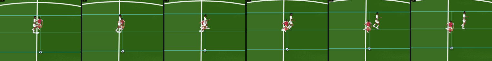
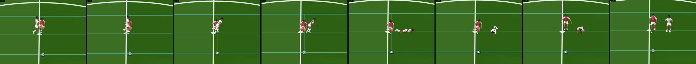
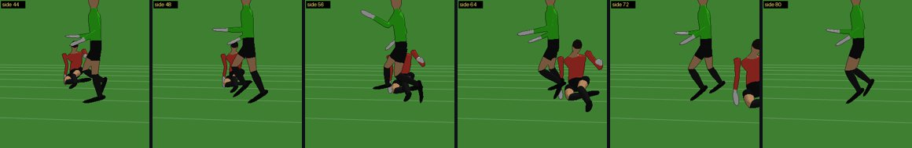
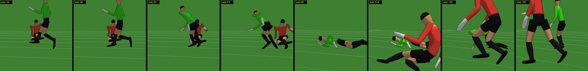
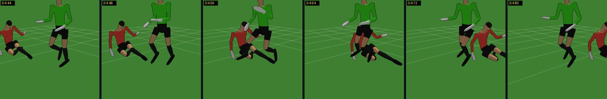

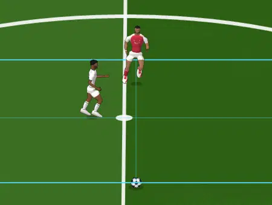
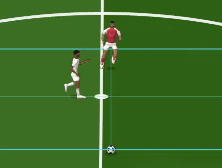
Jog vs sprint
the planted left foot is swept in both; the runner jogs (3 m/s) vs sprints (7.5 m/s)
rx_jog: FALL SIDE
| attacker | [3, 0] m/s · mass 73 kg · stride SINGLE_L (phase 0.575) · support R air / L down |
|---|---|
| tackler | SLIDE · [0, 4.717] m/s · mass 78 kg · primitive LEG |
| contact | tick 50 (sub-step 2) · segment foot_L (weight-bearing) · point [52.742, 33.829, 0.057] · normal [-0.126, 0.992] · penetration 0.003 m |
| relative velocity | normal 4.703 m/s · tangential -0.409 m/s |
| impulse | J = 116.93 N·s · planted-foot friction capacity 23.27 N·s · foot displaced 0.8 m · support LOST · swing landing shifted [0, 0] m, late 0 s · ΔV(COM) 0.192 m/s · spin 0.468 rad/s · tip 7 rad/s · tackler slowed 1.499 m/s |
| balance | next support in 0.265 s · capture-point error 0.14 m vs step correction 0.258 m · growth per step ×2.682 · error by step [0.14, 0] · vertical drop 0.677 m vs capacity 0.121 m · COLLAPSE |
| reaction | FALL · travels toward 0.446 rad, body rotates toward -1.297 rad → lands SIDE · on the pitch at 1.185 s · slides 0.658 m · up at 2.971 s |
| ball / man | NO_BALL |
rx_sprint: FALL FRONT
| attacker | [7.5, 0] m/s · mass 73 kg · stride SINGLE_L (phase 0.526) · support R air / L down |
|---|---|
| tackler | SLIDE · [0, 4.717] m/s · mass 78 kg · primitive LEG |
| contact | tick 50 (sub-step 4) · segment foot_L (weight-bearing) · point [56.675, 33.829, 0.04] · normal [-0.607, 0.794] · penetration 0.011 m |
| relative velocity | normal 6.587 m/s · tangential 0.851 m/s |
| impulse | J = 163.79 N·s · planted-foot friction capacity 23.27 N·s · foot displaced 0.8 m · support LOST · swing landing shifted [0, 0] m, late 0 s · ΔV(COM) 0.269 m/s · spin 0.629 rad/s · tip 7 rad/s · tackler slowed 2.1 m/s |
| balance | next support in 0.174 s · capture-point error 0.147 m vs step correction 0.231 m · growth per step ×1.786 · error by step [0.147, 0] · vertical drop 0.291 m vs capacity 0.121 m · COLLAPSE |
| reaction | FALL · travels toward 0.179 rad, body rotates toward -0.681 rad → lands FRONT · on the pitch at 1.185 s · slides 2.937 m · up at 3.5 s |
| ball / man | NO_BALL |
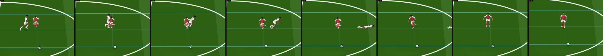

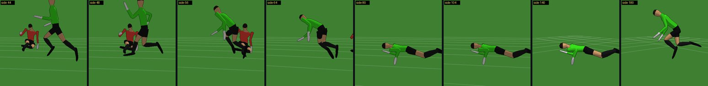
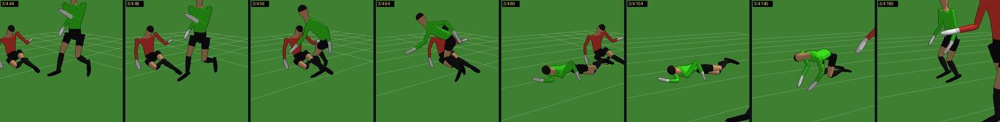
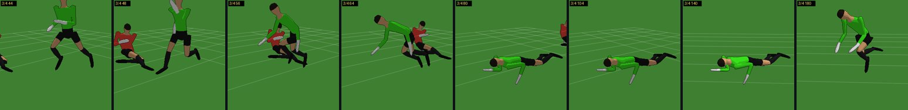
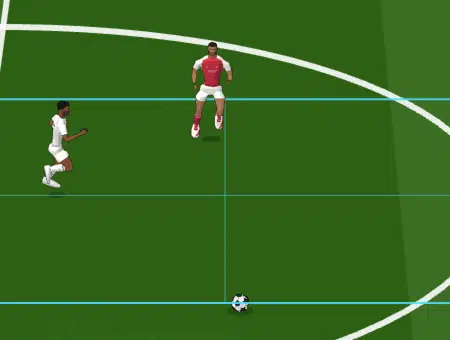
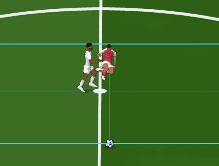
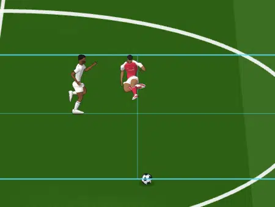
Square vs glancing
same line, speed and stride; in the glancing case the slide starts 30 cm further back so only the tip of the leg reaches him
rx_square: FALL FRONT
| attacker | [3, 0] m/s · mass 73 kg · stride SINGLE_R (phase 0.115) · support R down / L air |
|---|---|
| tackler | SLIDE · [0, 4.625] m/s · mass 78 kg · primitive LEG |
| contact | tick 51 (sub-step 4) · segment foot_L (swinging) · point [52.493, 33.829, 0.175] · normal [-1, 0] · penetration 0.004 m |
| relative velocity | normal 5.601 m/s · tangential -4.625 m/s |
| impulse | J = 5.85 N·s · planted-foot friction capacity 0 N·s · foot displaced 0 m · support kept · swing landing shifted [-0.464, 0] m, late 0.152 s · ΔV(COM) 0.01 m/s · spin -0.016 rad/s · tip 0.048 rad/s · tackler slowed 0.075 m/s |
| balance | next support in 0.152 s · capture-point error 0.687 m vs step correction 0.363 m · growth per step ×2.682 · error by step [0.687, 0.868, 1.354, 2.658, 6.154] · vertical drop 0 m vs capacity 0.121 m |
| reaction | FALL · travels toward 0 rad, body rotates toward 0 rad → lands FRONT · on the pitch at 1.507 s · slides 0.644 m · up at 3.389 s |
| ball / man | NO_BALL |
rx_glancing: STUMBLE
| attacker | [3, 0] m/s · mass 73 kg · stride SINGLE_R (phase 0.195) · support R down / L air |
|---|---|
| tackler | SLIDE · [0, 4.35] m/s · mass 78 kg · primitive LEG |
| contact | tick 54 (sub-step 4) · segment shin_L (swinging) · point [52.589, 33.829, 0.235] · normal [-0.094, 0.996] · penetration 0 m |
| relative velocity | normal 4.899 m/s · tangential 5.578 m/s |
| impulse | J = 20.64 N·s · planted-foot friction capacity 0 N·s · foot displaced 0 m · support kept · swing landing shifted [-0.029, 0.307] m, late 0.138 s · ΔV(COM) 0.071 m/s · spin -0.089 rad/s · tip 0.328 rad/s · tackler slowed 0.265 m/s |
| balance | next support in 0.138 s · capture-point error 0.358 m vs step correction 0.249 m · growth per step ×2.682 · error by step [0.358, 0.293, 0.118, 0] · vertical drop 0 m vs capacity 0.121 m |
| reaction | STUMBLE · 3 corrective step(s) |
| ball / man | NO_BALL |
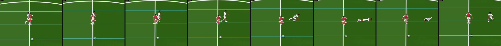
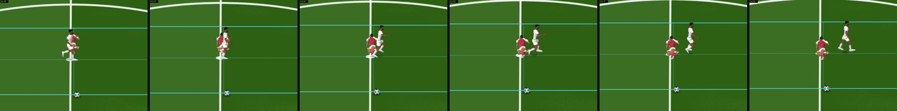
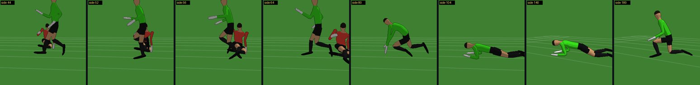
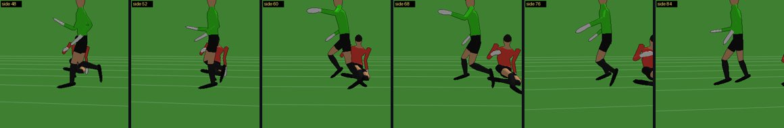
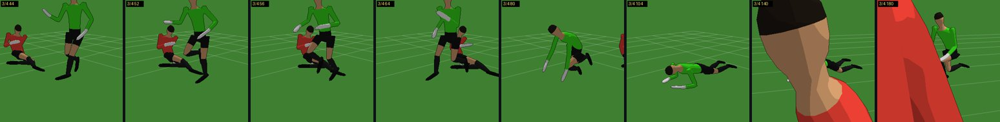
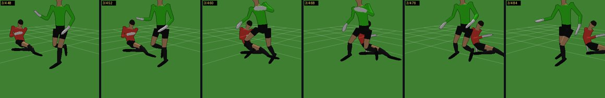
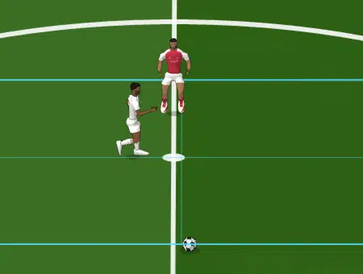
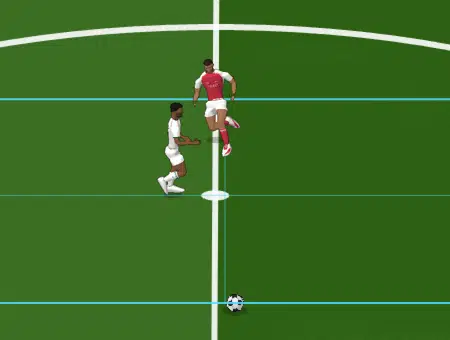
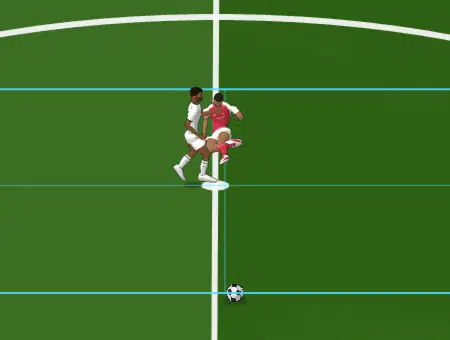
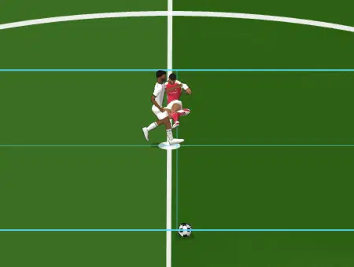
Lateral vs rear-diagonal
the same attacker state (5.5 m/s, same stride phase), the slide from the side vs from behind at 45°
rx_lateral: FALL FRONT
| attacker | [5.5, 0] m/s · mass 73 kg · stride AIRBORNE (phase 0.42) · support R air / L air |
|---|---|
| tackler | SLIDE · [0, 4.717] m/s · mass 78 kg · primitive LEG |
| contact | tick 50 (sub-step 4) · segment foot_L (swinging) · point [55.037, 33.829, 0.135] · normal [-0.845, 0.535] · penetration 0.009 m |
| relative velocity | normal 8.979 m/s · tangential 0.106 m/s |
| impulse | J = 9.38 N·s · planted-foot friction capacity 0 N·s · foot displaced 0 m · support kept · swing landing shifted [-0.091, 0.058] m, late 0.22 s · ΔV(COM) 0.015 m/s · spin 0.015 rad/s · tip 0.081 rad/s · tackler slowed 0.12 m/s |
| balance | next support in 0.254 s · capture-point error 0.688 m vs step correction 0.362 m · growth per step ×1.989 · error by step [0.688, 0.647, 0.567, 0.406, 0.088] · vertical drop 0 m vs capacity 0.121 m |
| reaction | FALL · travels toward -0.038 rad, body rotates toward -0.052 rad → lands FRONT · on the pitch at 1.36 s · slides 1.755 m · up at 3.491 s |
| ball / man | NO_BALL |
rx_rear_diag: STUMBLE
| attacker | [5.5, 0] m/s · mass 73 kg · stride SINGLE_R (phase 0.353) · support R down / L air |
|---|---|
| tackler | SLIDE · [3.4, 3.4] m/s · mass 78 kg · primitive LEG |
| contact | tick 49 (sub-step 1) · segment foot_L (swinging) · point [54.809, 33.829, 0.204] · normal [-0.707, 0.707] · penetration 0.006 m |
| relative velocity | normal 6.078 m/s · tangential 1.27 m/s |
| impulse | J = 6.35 N·s · planted-foot friction capacity 0 N·s · foot displaced 0 m · support kept · swing landing shifted [-0.095, 0.095] m, late 0.162 s · ΔV(COM) 0.01 m/s · spin 0.016 rad/s · tip 0.05 rad/s · tackler slowed 0.081 m/s |
| balance | next support in 0.162 s · capture-point error 0.543 m vs step correction 0.359 m · growth per step ×1.989 · error by step [0.543, 0.367, 0.017, 0] · vertical drop 0 m vs capacity 0.121 m |
| reaction | STUMBLE · 3 corrective step(s) |
| ball / man | NO_BALL |
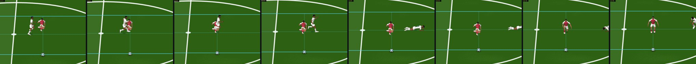
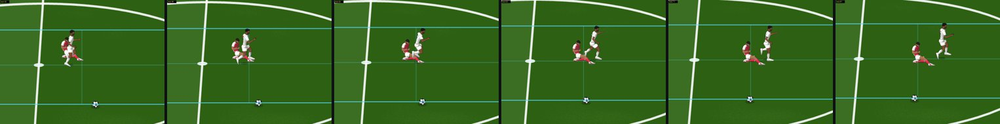
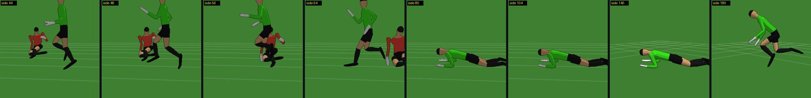
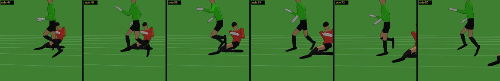
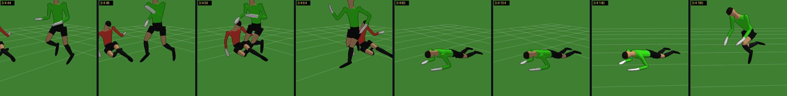
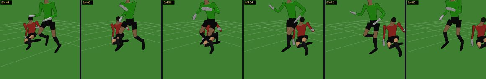
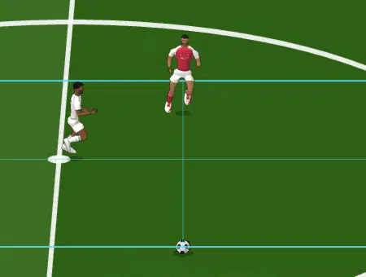
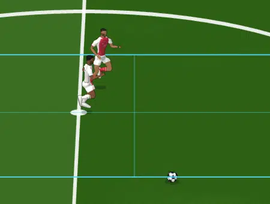
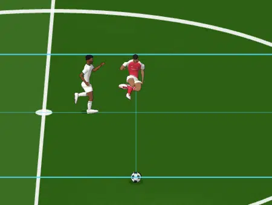
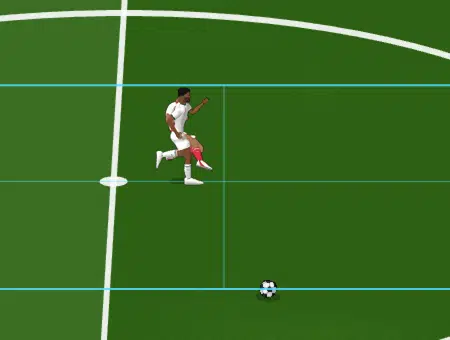
Early vs late stance
the planted right foot swept at ≈4.3 m/s by a sprinting runner — early in its stance (the other foot far from landing) vs late (about to land)
rx_early_stance: FALL SIDE
| attacker | [7.5, 0] m/s · mass 73 kg · stride SINGLE_R (phase 0.069) · support R down / L air |
|---|---|
| tackler | SLIDE · [0, 4.258] m/s · mass 78 kg · primitive LEG |
| contact | tick 55 (sub-step 1) · segment foot_R (weight-bearing) · point [57.104, 34.171, 0.04] · normal [-0.186, 0.983] · penetration 0.003 m |
| relative velocity | normal 4.395 m/s · tangential 0.326 m/s |
| impulse | J = 109.29 N·s · planted-foot friction capacity 23.27 N·s · foot displaced 0.8 m · support LOST · swing landing shifted [0, 0] m, late 0 s · ΔV(COM) 0.18 m/s · spin 0.627 rad/s · tip 7 rad/s · tackler slowed 1.401 m/s |
| balance | next support in 0.158 s · capture-point error 0.093 m vs step correction 0.107 m · growth per step ×1.786 · error by step [0.093, 0] · vertical drop 0.233 m vs capacity 0.121 m · COLLAPSE |
| reaction | FALL · travels toward 0.128 rad, body rotates toward -1.098 rad → lands SIDE · on the pitch at 1.268 s · slides 3.015 m · up at 3.495 s |
| ball / man | NO_BALL |
rx_late_stance: CORRECTION
| attacker | [7.5, 0] m/s · mass 73 kg · stride SINGLE_R (phase 0.181) · support R down / L air |
|---|---|
| tackler | SLIDE · [0, 4.258] m/s · mass 78 kg · primitive LEG |
| contact | tick 55 (sub-step 2) · segment foot_R (weight-bearing) · point [56.877, 34.171, 0.04] · normal [-0.544, 0.839] · penetration 0.007 m |
| relative velocity | normal 4.192 m/s · tangential -1.361 m/s |
| impulse | J = 104.23 N·s · planted-foot friction capacity 23.27 N·s · foot displaced 0.8 m · support LOST · swing landing shifted [0, 0] m, late 0 s · ΔV(COM) 0.171 m/s · spin 0.252 rad/s · tip 7 rad/s · tackler slowed 1.336 m/s |
| balance | next support in 0.117 s · capture-point error 0.078 m vs step correction 0.128 m · growth per step ×1.786 · error by step [0.078, 0] · vertical drop 0.112 m vs capacity 0.121 m |
| reaction | CORRECTION · 1 corrective step(s) |
| ball / man | NO_BALL |
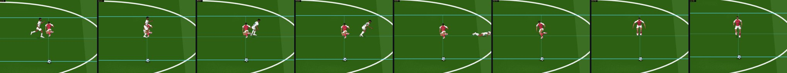
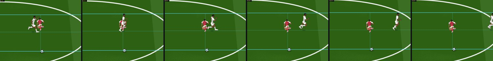
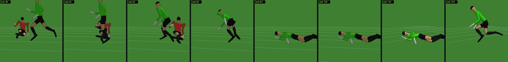
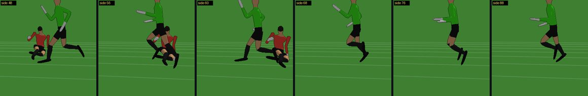
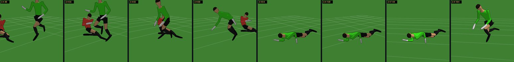
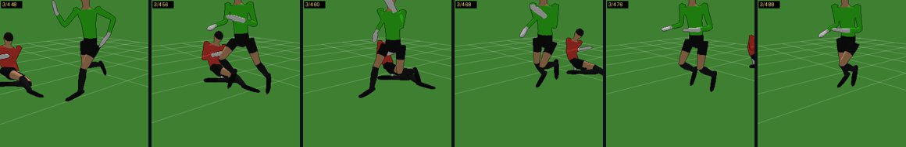
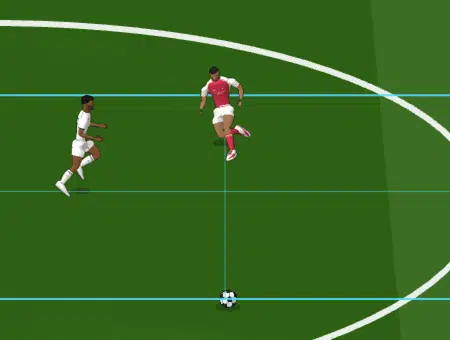
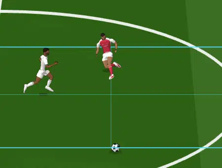
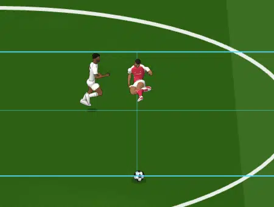
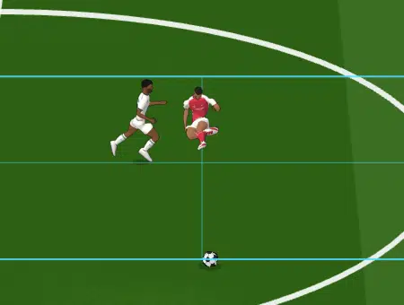
6 · More situations
Feet swept from behind, standing — FALL BACK
| attacker | [0, 0] m/s · mass 73 kg · stride DOUBLE (phase 0.08) · support R down / L down |
|---|---|
| tackler | SLIDE · [4.442, 0] m/s · mass 78 kg · primitive LEG |
| contact | tick 53 (sub-step 1) · segment shin_R (weight-bearing) · point [50.045, 34.167, 0.12] · normal [0.822, 0.57] · penetration 0.003 m |
| relative velocity | normal 3.65 m/s · tangential -2.531 m/s |
| impulse | J = 90.75 N·s · planted-foot friction capacity 11.64 N·s · foot displaced 0.8 m · support LOST · swing landing shifted [0, 0] m, late 0 s · ΔV(COM) 0.311 m/s · spin -0.347 rad/s · tip 6.661 rad/s · tackler slowed 1.163 m/s |
| balance | next support in 0.06 s · capture-point error 0.496 m vs step correction 0.209 m · growth per step ×2.756 · error by step [0.496, 0.792, 1.605, 3.848, 10.028] · vertical drop 0 m vs capacity 0.121 m · obstacle 0.213 m |
| reaction | FALL · travels toward 0.975 rad, body rotates toward -2.574 rad → lands BACK · on the pitch at 1.467 s · slides 0.072 m · up at 3.245 s |
| ball / man | NO_BALL |
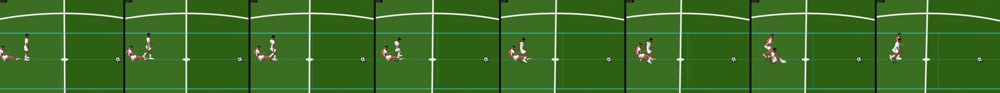
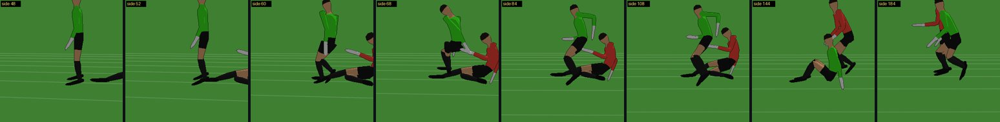
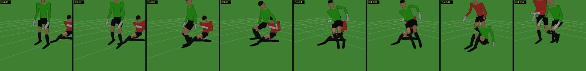
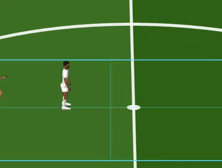
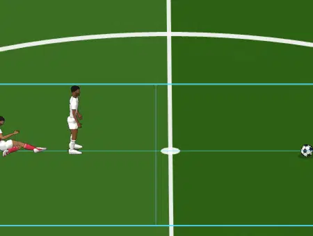
Front-diagonal: over the sliding tackler — FALL FRONT
| attacker | [5.5, 0] m/s · mass 73 kg · stride SINGLE_R (phase 0.352) · support R down / L air |
|---|---|
| tackler | SLIDE · [-3.011, 3.011] m/s · mass 78 kg · primitive BODY |
| contact | tick 55 (sub-step 3) · segment foot_L (swinging) · point [55.405, 33.829, 0.204] · normal [-0.686, 0.728] · penetration 0.005 m |
| relative velocity | normal 10.156 m/s · tangential 6.385 m/s |
| impulse | J = 10.61 N·s · planted-foot friction capacity 0 N·s · foot displaced 0 m · support kept · swing landing shifted [-0.154, 0.164] m, late 0.243 s · ΔV(COM) 0.017 m/s · spin 0.028 rad/s · tip 0.084 rad/s · tackler slowed 0.136 m/s |
| balance | next support in 0.243 s · capture-point error 0.829 m vs step correction 0.357 m · growth per step ×1.989 · error by step [0.829, 0.939, 1.156, 1.588, 2.448] · vertical drop 0 m vs capacity 0.121 m |
| reaction | FALL · travels toward -0.104 rad, body rotates toward -0.121 rad → lands FRONT · on the pitch at 1.427 s · slides 1.76 m · up at 3.558 s |
| ball / man | NO_BALL |
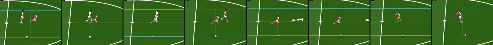
A standing player hit from the side — FALL BACK
| attacker | [0, 0] m/s · mass 73 kg · stride DOUBLE (phase 0.08) · support R down / L down |
|---|---|
| tackler | SLIDE · [0, 4.442] m/s · mass 78 kg · primitive LEG |
| contact | tick 53 (sub-step 1) · segment shin_R (weight-bearing) · point [49.833, 34.045, 0.12] · normal [-0.57, 0.822] · penetration 0.003 m |
| relative velocity | normal 3.65 m/s · tangential -2.531 m/s |
| impulse | J = 90.75 N·s · planted-foot friction capacity 11.64 N·s · foot displaced 0.8 m · support LOST · swing landing shifted [0, 0] m, late 0 s · ΔV(COM) 0.311 m/s · spin -0.347 rad/s · tip 6.661 rad/s · tackler slowed 1.163 m/s |
| balance | next support in 0.06 s · capture-point error 0.496 m vs step correction 0.209 m · growth per step ×2.756 · error by step [0.496, 0.792, 1.605, 3.848, 10.028] · vertical drop 0 m vs capacity 0.121 m · obstacle 0.213 m |
| reaction | FALL · travels toward 2.546 rad, body rotates toward -1.003 rad → lands BACK · on the pitch at 1.467 s · slides 0.072 m · up at 3.245 s |
| ball / man | NO_BALL |
A sprinter hit in the flight phase — STUMBLE
| attacker | [7.5, 0] m/s · mass 73 kg · stride AIRBORNE (phase 0.958) · support R air / L air |
|---|---|
| tackler | SLIDE · [3.076, -3.076] m/s · mass 78 kg · primitive LEG |
| contact | tick 54 (sub-step 4) · segment foot_R (swinging) · point [57.227, 34.171, 0.102] · normal [-0.707, -0.707] · penetration 0.017 m |
| relative velocity | normal 6.431 m/s · tangential -2.081 m/s |
| impulse | J = 6.72 N·s · planted-foot friction capacity 0 N·s · foot displaced 0 m · support kept · swing landing shifted [-0.031, -0.031] m, late 0.169 s · ΔV(COM) 0.011 m/s · spin -0.024 rad/s · tip 0.06 rad/s · tackler slowed 0.086 m/s |
| balance | next support in 0.199 s · capture-point error 0.66 m vs step correction 0.363 m · growth per step ×1.786 · error by step [0.66, 0.53, 0.298, 0] · vertical drop 0 m vs capacity 0.121 m |
| reaction | STUMBLE · 3 corrective step(s) |
| ball / man | NO_BALL |
7 · The contact matrix
A runner without the ball and a defender running on a line launch a slide timed to reach him. Swept: runner speed, slide direction, stride phase at contact, lateral offset. This shows a continuum, not canned reactions.
840 matrix cases (5 speeds × 7 slide directions × 8 stride phases × 3 lateral offsets): 750 contacts, 90 slides that never touched him.
| runner speed | NEGLIGIBLE | CORRECTION | STUMBLE | FALL | falls: FRONT / SIDE / BACK | median ground slide (m) |
|---|---|---|---|---|---|---|
| 0 m/s | 8 | 48 | 36 | 60 | 24 / 32 / 4 | 0.05 |
| 1.5 m/s | 3 | 54 | 33 | 73 | 19 / 38 / 16 | 0.24 |
| 3 m/s | 3 | 43 | 37 | 80 | 46 / 17 / 17 | 0.66 |
| 5.5 m/s | 8 | 38 | 29 | 61 | 47 / 14 / 0 | 1.75 |
| 7.5 m/s | 8 | 30 | 35 | 63 | 57 / 6 / 0 | 3.05 |
| struck segment | NEGLIGIBLE | CORRECTION | STUMBLE | FALL | falls: FRONT / SIDE / BACK | median ground slide (m) |
|---|---|---|---|---|---|---|
| foot (swinging) | 0 | 76 | 105 | 160 | 156 / 4 / 0 | 1.75 |
| foot (weight-bearing) | 28 | 30 | 29 | 85 | 31 / 54 / 0 | 0.10 |
| shin (swinging) | 0 | 38 | 16 | 6 | 3 / 3 / 0 | 0.23 |
| shin (weight-bearing) | 2 | 69 | 20 | 86 | 3 / 46 / 37 | 0.31 |
| stride state at contact | NEGLIGIBLE | CORRECTION | STUMBLE | FALL | falls: FRONT / SIDE / BACK | median ground slide (m) |
|---|---|---|---|---|---|---|
| AIRBORNE | 0 | 52 | 54 | 78 | 78 / 0 / 0 | 3.02 |
| DOUBLE | 8 | 53 | 43 | 75 | 26 / 41 / 8 | 0.05 |
| SINGLE_L | 15 | 56 | 34 | 86 | 33 / 40 / 13 | 0.66 |
| SINGLE_R | 7 | 52 | 39 | 98 | 56 / 26 / 16 | 0.65 |
| slide direction (0° = from behind, 90° / −90° = from his left / right, 180° = head-on) | NEGLIGIBLE | CORRECTION | STUMBLE | FALL | falls: FRONT / SIDE / BACK | median ground slide (m) |
|---|---|---|---|---|---|---|
| -90° | 2 | 28 | 21 | 64 | 41 / 18 / 5 | 0.67 |
| -45° | 3 | 45 | 24 | 36 | 16 / 18 / 2 | 0.66 |
| 0° | 1 | 26 | 22 | 35 | 6 / 7 / 22 | 0.32 |
| 45° | 12 | 32 | 34 | 37 | 13 / 19 / 5 | 0.65 |
| 90° | 2 | 18 | 16 | 78 | 44 / 31 / 3 | 0.65 |
| 135° | 3 | 28 | 20 | 45 | 38 / 7 / 0 | 0.65 |
| 180° | 7 | 36 | 33 | 42 | 35 / 7 / 0 | 0.67 |
8 · Regression, neutrality, determinism
- BASELINE GATE PASS — every pre-existing scenario is authoritative- and pose-identical to baseline/outfield-runtime-v1
- GATE PASS — receiving and passing presentation explain the authoritative outcome, they never change it
- presentation: 27 fixtures compared — PRESENTATION IDENTICAL
- TRACE GATE PASS
- ON/OFF GATE PASS — receiving and passing presentation explain the authoritative outcome, they never change it
- determinism GATE PASS — receiving and passing presentation explain the authoritative outcome, they never change it
- SSG ON/OFF TRACE GATE PASS
- SSG determinism TRACE GATE PASS
- demos ON/OFF TRACE GATE PASS
- reactions ON/OFF GATE PASS — receiving and passing presentation explain the authoritative outcome, they never change it
- reactions determinism GATE PASS — receiving and passing presentation explain the authoritative outcome, they never change it
- RX GATE PASS — every difference from baseline/defending-v1.1-slide begins at a player-body contact or at the intended sliding-body change
- RX RUN GATE PASS — divergence only after a player-body contact / a launched slide
- RX RUN GATE FAIL (1)
Against baseline/defending-v1.1-slide: every difference is explained by the new model
A fixture is IDENTICAL, or an EXPECTED CHANGE. An expected change means the authoritative trace first diverges either at or after a player-body contact (the new reaction state and what follows from it), or while a launched slide is within 1.2 m of an opponent. The latter is the one intended change before contact: a sliding body is no longer a standing disc. The events before the divergence must be identical, and anything else fails.
st_comfort | IDENTICAL st_marginal | IDENTICAL st_just_out | IDENTICAL st_far | IDENTICAL st_left_foot | IDENTICAL st_right_foot | IDENTICAL st_toward | IDENTICAL st_across | IDENTICAL st_from_behind | IDENTICAL st_from_side | IDENTICAL st_tight_ball | IDENTICAL sl_win | EXPECTED CHANGE | first divergence tick 71 | after the first body contact (tick 71) | events before it identical | foot_R swing → FALL FRONT sl_early | IDENTICAL sl_late | IDENTICAL sl_from_behind | EXPECTED CHANGE | first divergence tick 84 | after the first body contact (tick 85) | events before it identical | sl_left | EXPECTED CHANGE | first divergence tick 72 | after the first body contact (tick 72) | events before it identical | foot_L planted → FALL FRONT sl_loose | EXPECTED CHANGE | first divergence tick 140 | launched slide within 1.2 m of an opponent (sliding body is not a standing disc) | events before it identical | foot_R swing → STUMBLE jk_stationary | IDENTICAL jk_walk | IDENTICAL jk_dribble | IDENTICAL jk_lateral | IDENTICAL jk_accel | IDENTICAL jk_to_tackle | IDENTICAL jk_to_sprint | IDENTICAL RX GATE PASS — every difference from baseline/defending-v1.1-slide begins at a player-body contact or at the intended sliding-body change
The small-sided games and the defending demos, compared the same way:
D7 EXPECTED CHANGE first divergence tick 3384 preceded by TACKLE_BODY_CONTACT@3356, PLAYER_CONTACT@3356 D8 IDENTICAL D9 EXPECTED CHANGE first divergence tick 838 preceded by PLAYER_CONTACT@836, TACKLE_START@828, TACKLE_BODY_CONTACT@834 RX RUN GATE PASS — divergence only after a player-body contact / a launched slide jockey IDENTICAL stand_win IDENTICAL stand_miss IDENTICAL retention IDENTICAL slide_win EXPECTED CHANGE first divergence tick 111 preceded by TACKLE_START@62, TACKLE_START@72, TACKLE_START@70 slide_miss EXPECTED CHANGE first divergence tick 215 preceded by TACKLE_BODY_CONTACT@86, TACKLE_START@57, TACKLE_BODY_CONTACT@88 intercept UNEXPECTED first divergence tick 102 preceded by nothing RX RUN GATE FAIL (1)
The one flagged demo, explained. The demo runner plays its seven patterns in ONE page, and each attempt's starting position varies with a global attempt counter. slide_miss legitimately changed: its slides now make attackers fall, so its attempts take longer and it made 2 fewer. That moved the intercept pattern's first attempt from #87 to #85, which has a different starting geometry. Run on its own against the frozen tag, the intercept demo is identical:
intercept ticks 3600 trace max|d| 0 events identical (67) IDENTICAL TRACE GATE PASS
9 · Performance
Measured separately:
- contact detection;
- balance and reaction planning;
- bodies on the pitch;
- disc occupancy;
- the reaction skeleton solve, including its ground measurement.
Measured at 2, 6 and 22 players (the 11 v 11 fixture ?squad=D22), simulation only and simulation with every rig. Players not in a contact event cost nothing beyond a distance check.
D7 sim only players 2 tick 0.036 ms (max 2.80) detect 0.9 µs/tick (66 tests) resolve 0.3 µs/tick (1) lying-occupancy 0.7 µs disc-occupancy 1.4 µs reaction solve 0.0 µs/tick (0 actor-ticks) contacts 1 D7 sim+rigs players 2 tick 0.323 ms (max 4.10) detect 0.6 µs/tick (66 tests) resolve 0.1 µs/tick (1) lying-occupancy 0.3 µs disc-occupancy 1.2 µs reaction solve 2.0 µs/tick (169 actor-ticks) contacts 1 D9 sim only players 6 tick 0.083 ms (max 1.90) detect 1.7 µs/tick (921 tests) resolve 0.2 µs/tick (6) lying-occupancy 0.5 µs disc-occupancy 2.8 µs reaction solve 0.0 µs/tick (0 actor-ticks) contacts 6 D9 sim+rigs players 6 tick 0.864 ms (max 4.10) detect 1.1 µs/tick (921 tests) resolve 0.1 µs/tick (6) lying-occupancy 0.4 µs disc-occupancy 6.6 µs reaction solve 0.4 µs/tick (205 actor-ticks) contacts 6 D22 sim only players 22 tick 0.199 ms (max 1.30) detect 0.3 µs/tick (132 tests) resolve 0.0 µs/tick (0) lying-occupancy 0.7 µs disc-occupancy 27.1 µs reaction solve 0.0 µs/tick (0 actor-ticks) contacts 0 D22 sim+rigs players 22 tick 2.642 ms (max 8.90) detect 0.3 µs/tick (132 tests) resolve 0.0 µs/tick (0) lying-occupancy 0.9 µs disc-occupancy 14.9 µs reaction solve 0.0 µs/tick (0 actor-ticks) contacts 0 errors []
10 · Limitations and next
- Contact regions are what V1 challenges can physically reach: ground slides and standing-tackle feet meet feet and shins. Knee, thigh and body contacts are modelled, since their transmission and tip differ, but they are rare with these challenges.
- Near-graze contacts are sensitive by nature. A centimetre decides whether a foot is caught square or brushed. Review pairs were chosen where neighbouring geometry gives the same contact.
- No full ragdoll. The fall is a solved directional basis on an authoritative trajectory. Arms and limbs are not collided with other bodies; the tackled player's own legs do not interact with the tackler's body while falling.
- The tackler's own balance is not modelled beyond losing speed (V1 slides are already on the ground).
- Single-contact model: the first contact of a challenge resolves it. A second body contact in the same challenge is not re-evaluated.
- Foul facts: ball / man order, tackle quality, from-behind, closing speed and the contacted segment are recorded for the future referee. No call is made.
- Recorded, not fixed. Dribbling V1's
ofBootPlanlateral mirror.